Yes Neon Oy
Niementie 221, 15560 Nastola
Jukka Nissinen
0400 714355
yesneon@phnet.fi
Yes Neon Oy
Niementie 221, 15560 Nastola
Jukka Nissinen
0400 714355
yesneon@phnet.fi
Kassojen numerointiin ja aukiolon ilmaisuun.
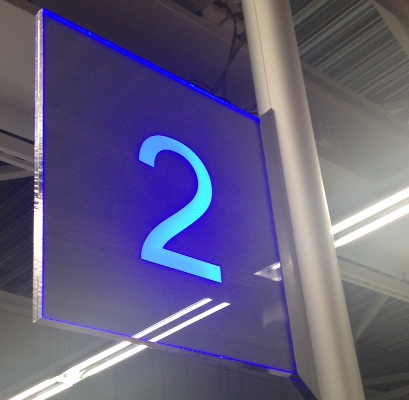 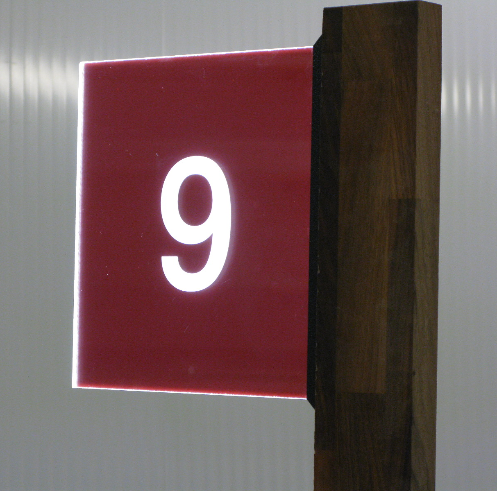
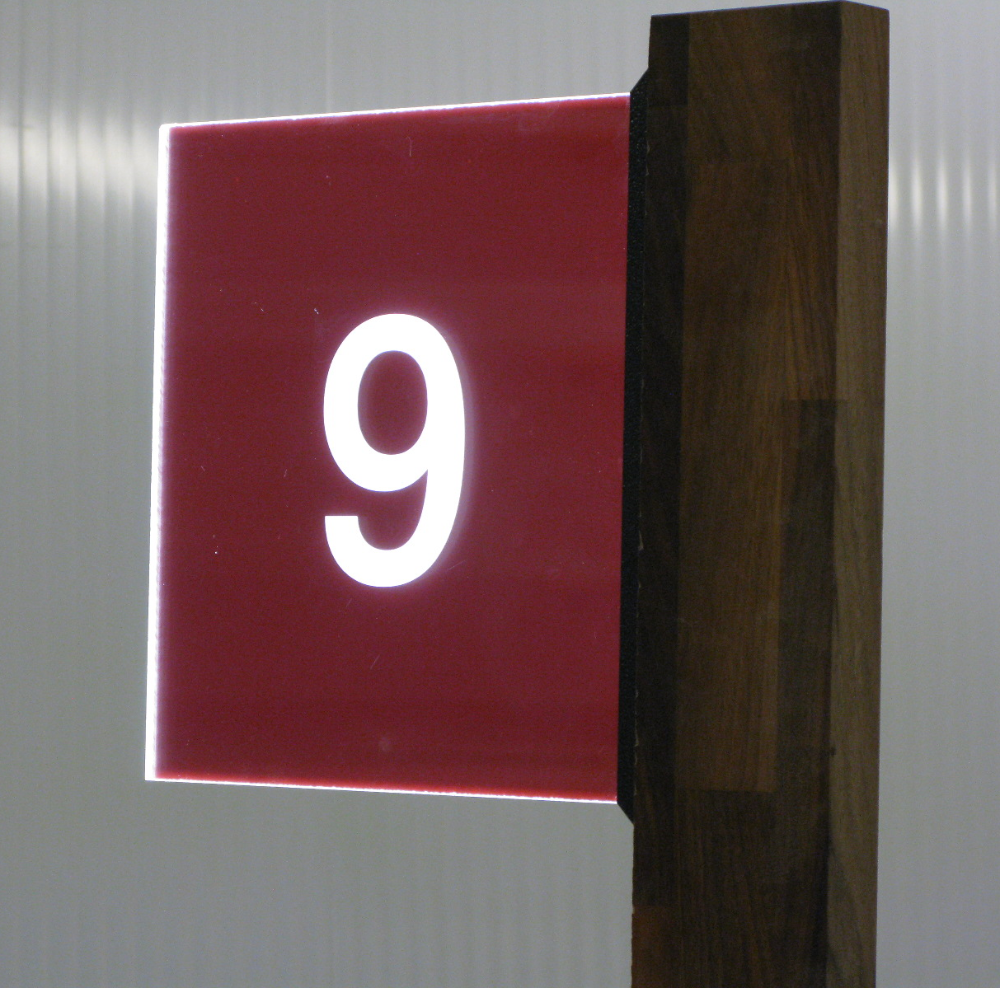
Erilaisia valomainoksia. mm. Ledivalaistu irtokirjainkyltti asennettuna lipalle, 3-sivuinen valaistu kattokuutio ja Liikenneaseman irtokirjainkyltit.
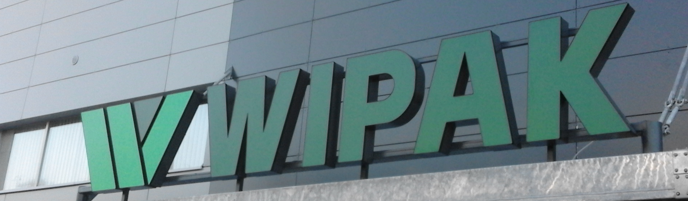 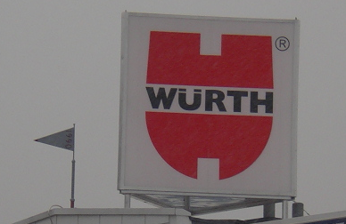 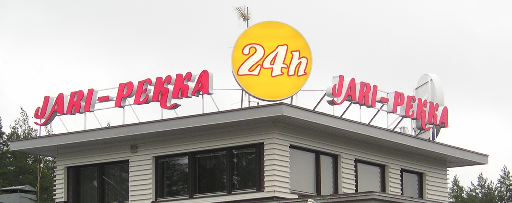Erilaisia teippauksia
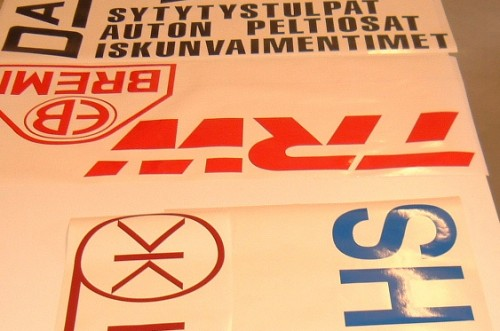 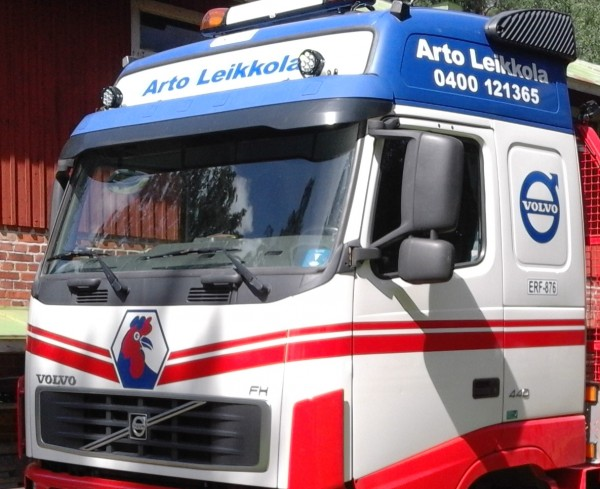Kaksipuolinen ledivalaistu pöytäkyltti.Kyltin paksuus vain 10 mm.
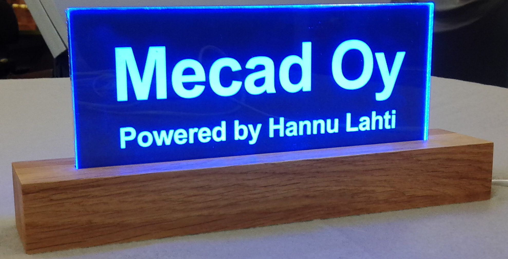Kohokirjaimilla saa elävyyttä ja visuaalisuutta. Eri tyylit valittavissa.
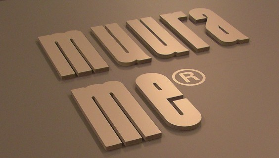Taustavalaistu sisäkilpi yrityksen sisäänkäynnissä.
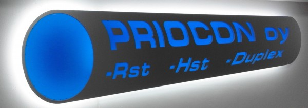Kohokirjaimia kyltteihin ja jyrsitty valaisinritilä.
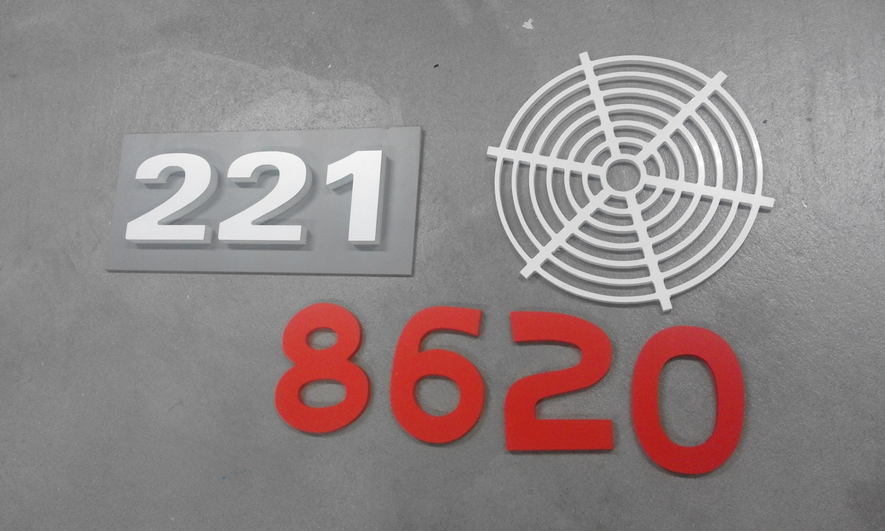Valaistuksella näyttävyyttä erilaisten liikkeiden palvelutiskeihin.

Portaiden valaistus ledimoduleilla.Teho tässä toteutuksessa n.0,6 W porrasta kohden.
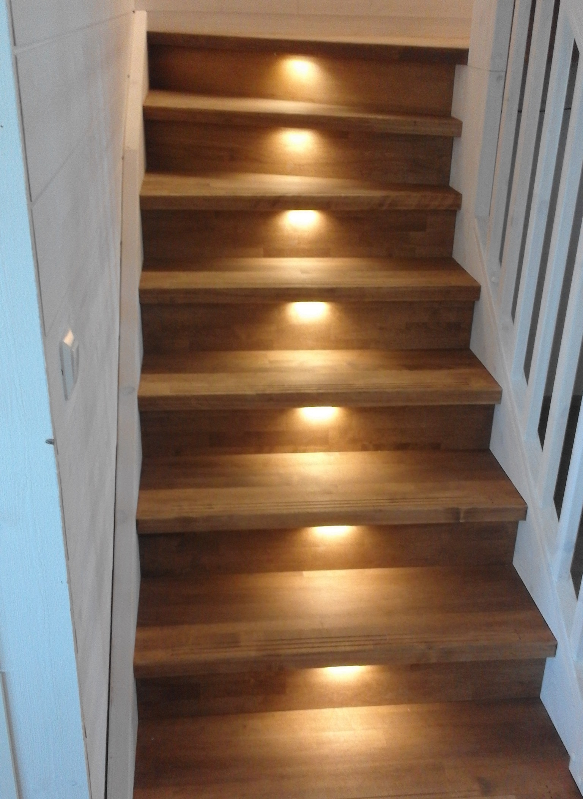